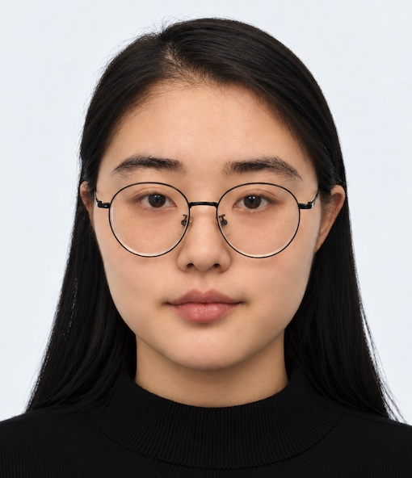
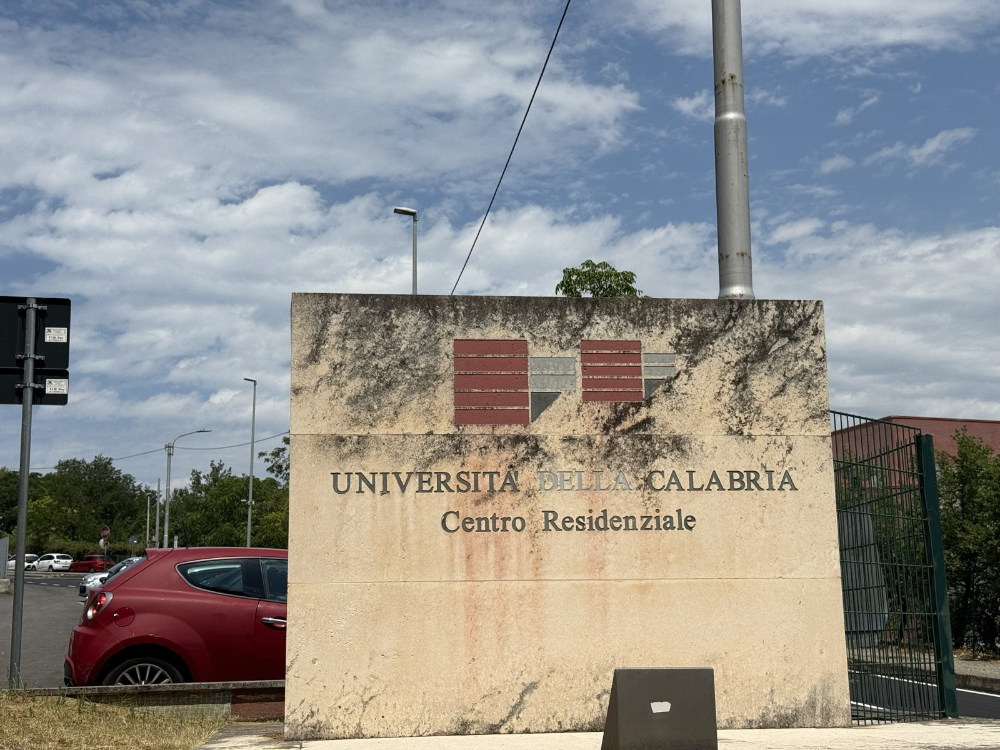
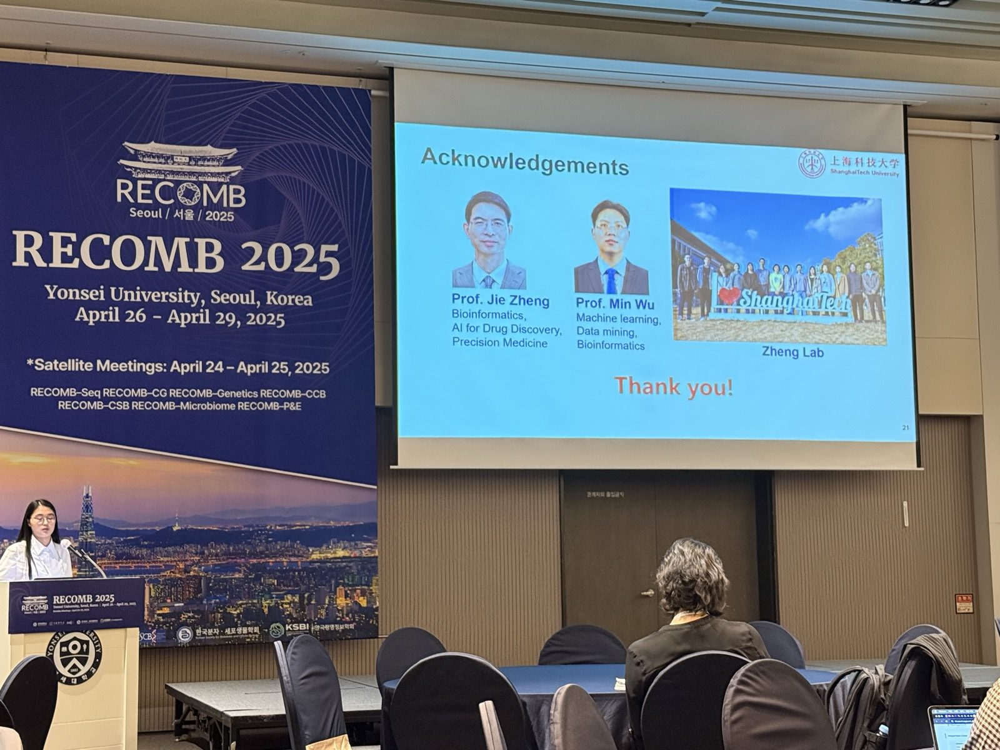
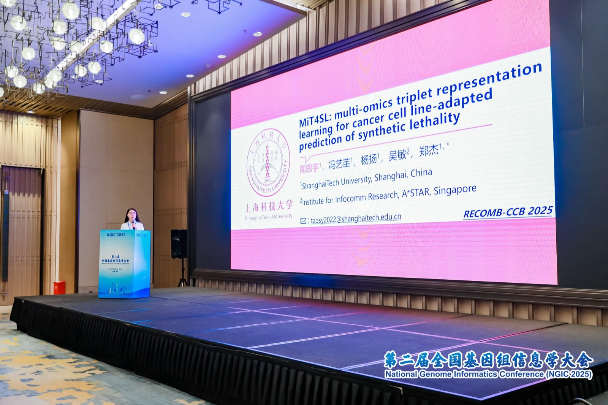
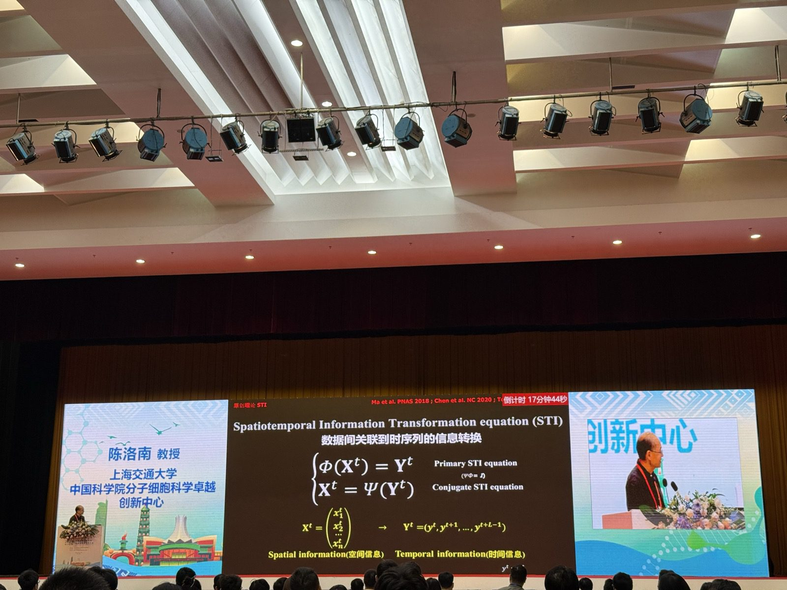
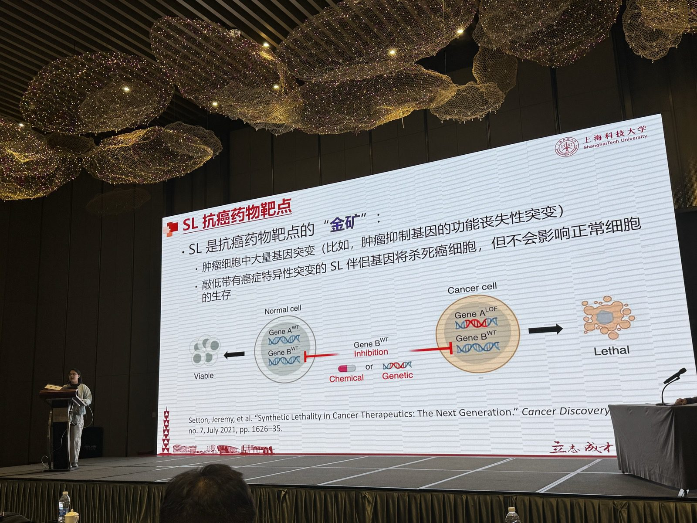
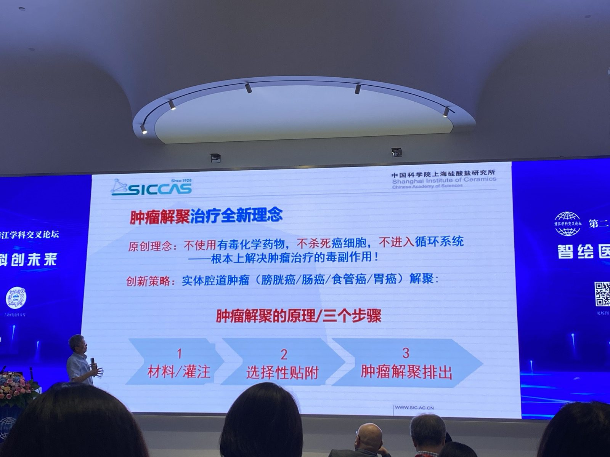
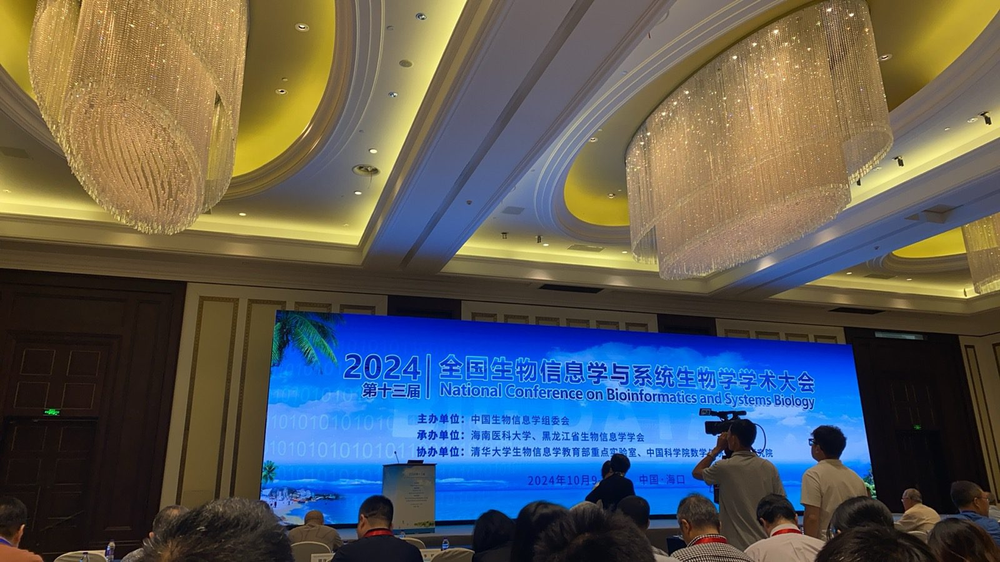
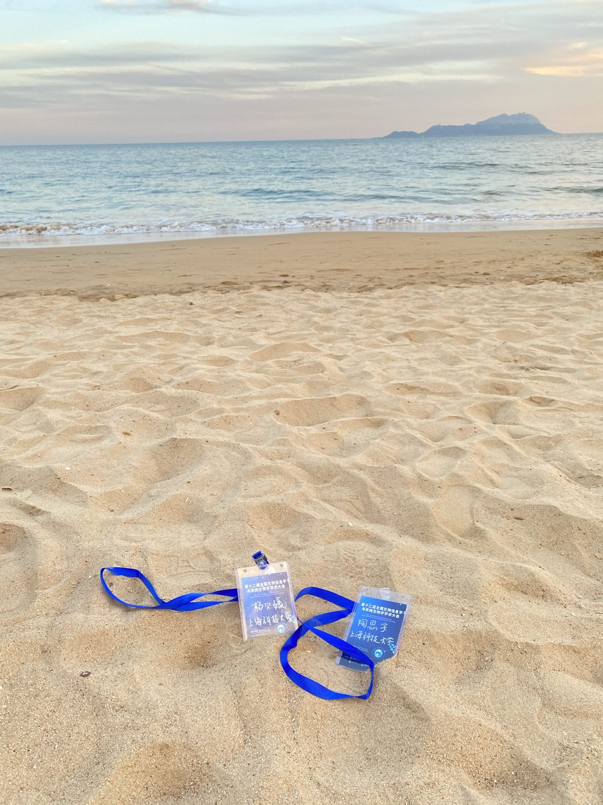

Siyu Tao
Ph.D. Student
ShanghaiTech University
Bio
I am Siyu Tao (陶思宇 in Chinese), a Ph.D. student in Computer Science and Technology at ShanghaiTech University, advised by Prof. Jie Zheng.
Before that, I received my B.Sc. in Data Science and Big Data Technology from Xiangtan University (Hunan) in 2022.
My research interests include:
- Multimodal and knowledge-guided biomedical target prediction.
- Active learning for experimental design under budget constraints.
- LLM agents for healthcare and scientific hypothesis generation.
If you are interested in my research, would like to explore a collaboration, or simply want to have a chat, please feel free to reach out via email or WeChat.
News
2026
- Presented SLAMR at ACM-BCB 2026 in Cosenza, Italy 🇮🇹. A wonderful trip! 😊
- Excited to share that two papers were accepted for oral presentations at ACM-BCB 2026! 🎉
2025
- Presented SLformer in Shenzhen. A great trip with delicious food! 😋
- Attended the National Conference on Bioinformatics and Systems Biology. Another wonderful trip! 😊
- Happy to share that LukePi was published in IEEE TCBB!
- Presented MiT4SL at the 17th RECOMB-CCB in Seoul, South Korea 🇰🇷. An unforgettable experience! 😄
- Honored to receive the Outstanding Presentation Award at the First-Author Forum of the 2nd National Conference on Genome Informatics! 🎉
- One paper accepted to the 17th RECOMB-CCB 2025! 🎉
- Presented MiT4SL in Shenzhen. A wonderful experience! 😄
Scroll for earlier updates ↓
Selected Publications
* Equal contribution. View all → Google Scholar.


Conference Moments

ACM-BCB

17th RECOMB-CCB

2nd National Conference on Genome Informatics

14th National Conference on Bioinformatics and Systems Biology

14th Symposium on Cancer Systems Biology

23rd Pujiang Interdisciplinary Forum

13th National Conference on Bioinformatics and Systems Biology

12th National Conference on Bioinformatics and Systems Biology


Scroll to explore
Education
Ph.D. in Computer Science and Technology · ShanghaiTech University · advised by Jie Zheng2022-09 – 2027-06 (expected)
B.Sc. in Data Science and Big Data Technology · Xiangtan University2018-09 – 2022-06
Honors & Awards
Outstanding Presentation Award
Merit Student
Outstanding Graduate of Hunan Province